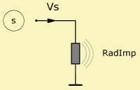

|
 |
| Purpose | Radiation Impedance, coupling to Boundary Element Domain. |
| Type | Network element (2 pole) |
| Domain | Acoustic |
| Used in | System |
RadImp "Any Name"
Node=s
DrvGroup=
RadImp couples the Lumped Element network to the Boundary Element part. Whenever there is a vibrating area in the Boundary Element part, which you want to couple to the Lumped Element network, you need to implement a RadImp component in the Lumped Element network. Technical details of the coupling are explained in the paper [9].
In the Boundary Element solving-script, vibrating boundary elements are those, which are linked to a Driving-section, or vibrating elements, which are generated by the Diaphragm-section. In both cases the link between the Lumped and Boundary Element parts is done with the help of DrvGroup= as explained in chapter Driving Groups.
The RadImp-component is an acoustic two-pole component. One pole is always grounded. From pole s to ground there is the lumped sound pressure, which resembles a mean-value of all elements, which take part in a DrvGroup. The volume-velocity, which feeds RadImp, is the total sum of the branches of self-radiation and mutual radiation impedances. Note, that in the above circuit the symbol RadImp stands for a matrix of self- and mutual-radiation impedances. Note also, that mutual radiation is taken care of automatically. For example, the following excerpt from the Lumped Element script of example "ABEC21", demonstrates the usage of DrvGroup=:
System "S1"
Resistor "Rg" R=0.3ohm Node=5=1003
Driver "Drv1" Def="SPH75" Node=1001=0=2001=3001 DrvGroup=1001,1002
Driver "Drv2" Def="SPW116" Node=1002=0=2002=3002 DrvGroup=2001,2002
Driver "Drv3" Def="SPW116" Node=1003=0=2003=3003 DrvGroup=3001,3002
RadImp "RadImp Drv1 Front" Node=2001 DrvGroup=1001
RadImp "RadImp Drv1 Rear" Node=3001 DrvGroup=1002
RadImp "RadImp Drv2 Front" Node=2002 DrvGroup=2001
RadImp "RadImp Drv2 Rear" Node=3002 DrvGroup=2002
RadImp "RadImp Drv3 Front" Node=2003 DrvGroup=3001
RadImp "RadImp Drv3 Rear" Node=3003 DrvGroup=3002